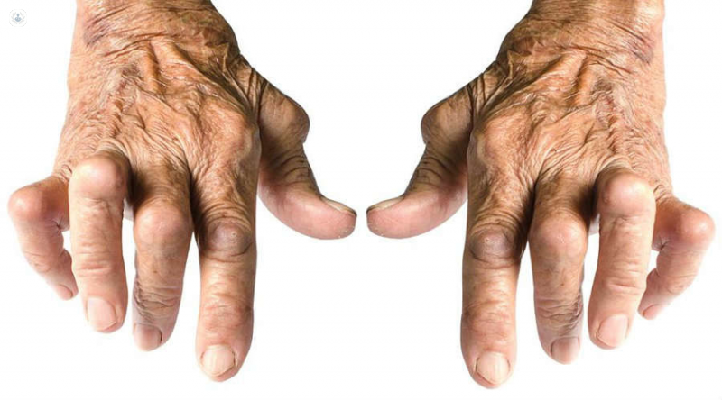

Artritis
La artritis es una inflamación de una o más articulaciones que provoca dolor y rigidez, y puede empeorar con el tiempo.
Existen varios tipos de artritis, pero los más comunes son la osteoartritis y la artritis reumatoide
Síntomas
Los síntomas de la artritis pueden variar según el tipo, pero los más comunes incluyen:
- Dolor en las articulaciones
- Rigidez, especialmente por la mañana
- Inflamación y enrojecimiento alrededor de las articulaciones
- Disminución del rango de movimiento
- Fatiga
Causas
Las causas de la artritis pueden depender del tipo específico de artritis. Algunas causas comunes incluyen:
- Desgaste del cartílago (osteoartritis)
- Respuestas autoinmunes (artritis reumatoide)
- Infecciones o lesiones en las articulaciones
- Factores genéticos
- Envejecimiento
Pruebas y Exámenes
El diagnóstico de la artritis incluye varios exámenes, como:
- Examen físico de las articulaciones
- Análisis de sangre para detectar marcadores inflamatorios o autoinmunes
- Rayos X, resonancias magnéticas (RM) o tomografías computarizadas (TC) para visualizar los daños en las articulaciones
- Análisis de líquido articular
Tratamientos
El tratamiento de la artritis depende del tipo y la gravedad, pero puede incluir:
- Medicamentos antiinflamatorios y analgésicos
- Terapia física para mejorar la movilidad
- Inyecciones de corticosteroides o ácido hialurónico
- Cirugía en casos graves (reemplazo articular)
- Modificación del estilo de vida, incluyendo ejercicio y dieta saludable